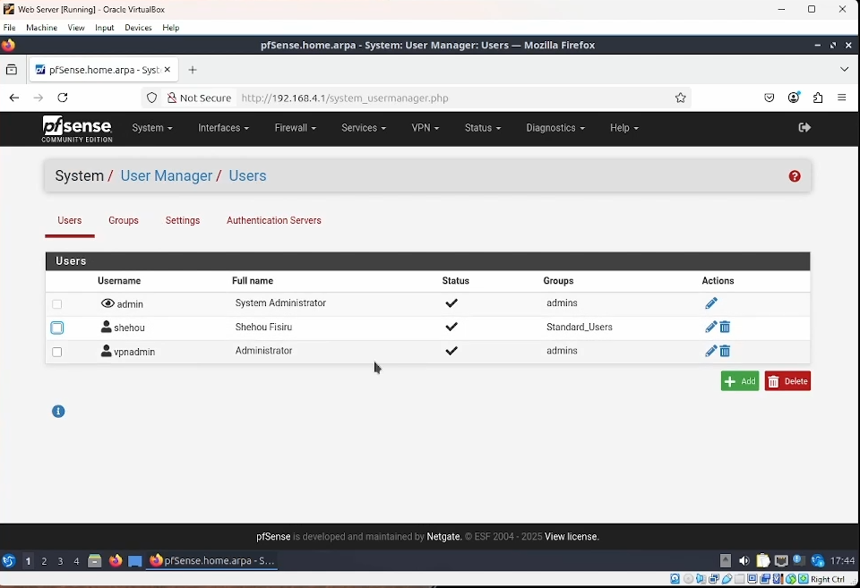
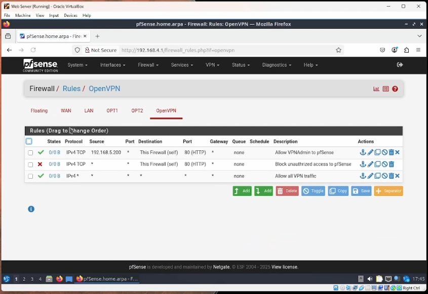
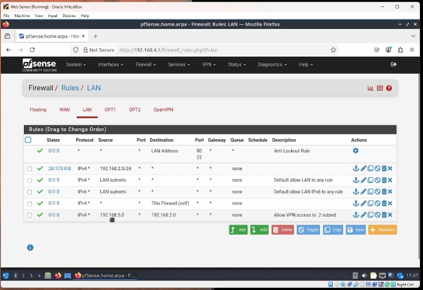
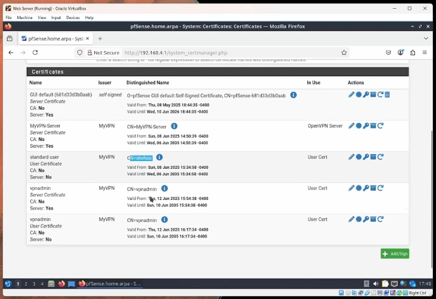
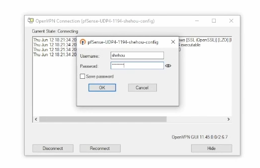
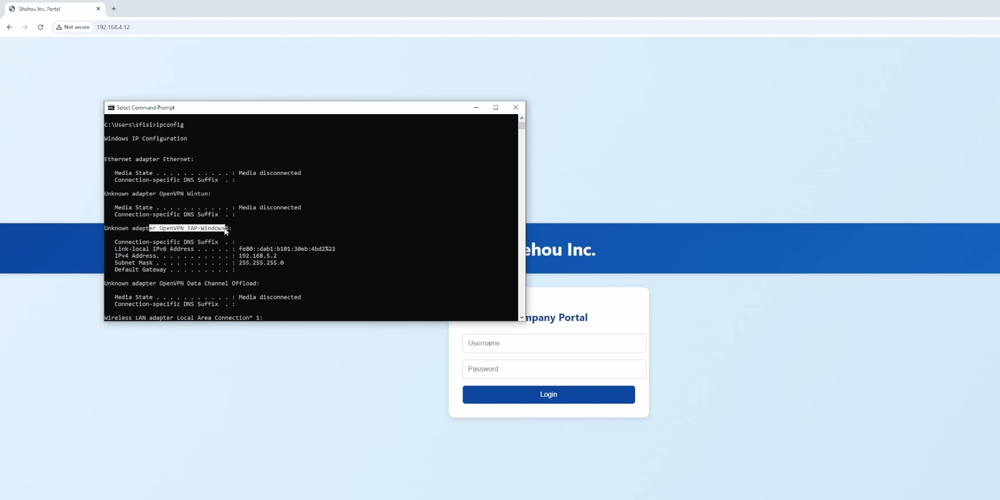
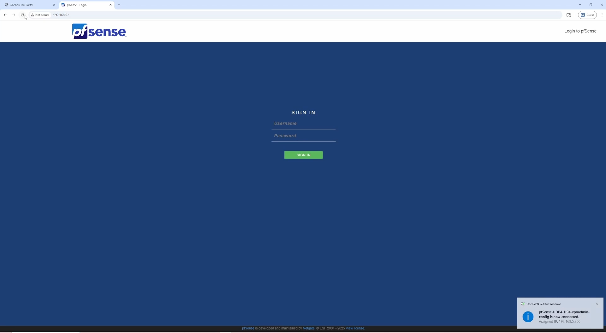

Purpose:
The goal of this project is to simulate a remote work environment by using OpenVPN to access network resources from an external device. In addition to accessing resources, access control was also implemented, designating standard users for standard capabilities, and an administrator user allowing a network admin to manage the network remotely.
Setup:
OpenVPN server is installed on the pfSense router, while OpenVPN client is installed on my laptop. Two configurations are exported, one for the standard users and one for the administrator. Certificates were created allowing users to authenticate, and firewall rules were put into place allowing the appropriate communication between devices, and enforcing the appropriate restrictions for unauthorized users.
Key Features:
• OpenVPN: OpenVPN server is installed onto pfSense, allowing devices with OpenVPN client to access the network externally.
• Security: User groups were created in order to manage privilege levels. Client specific overrides were implemented in the client packages, allowing administrators to obtain static IP addresses. Firewall rules allowed these specific IP addresses to access the pfSense console.
• Communication Rules: Created firewall rules allowing users tunneling in via a VPN to communicate with local workstations in the workstation’s subnet.
The following documents key elements of my project, followed by the full video of my results.
User Manager:
Pictured here are the network user accounts. The first one is the default administrator account, followed by a standard user account, accessible via VPN tunneling, as well as an administrator account accessible via VPN tunneling. They are assigned to the appropriate groups, allowing for appropriate permissions.
Firewall:
Pictured here are the firewall rules for the VPN. The initial rule is allowing the IP address 192.168.5.200, which was designated for the vpnadmin profile, to have access to the firewall GUI via HTTP. Immediately below it is a rule prohibiting access to the firewall GUI from all other users.
Pictured here, the final firewall rule is allowing communication from devices on the 192.168.5.0 subnet, VPN devices, to communicate with devices on the 192.168.2.0 subnet, where the windows workstations lie.
Certificates:
Pictured here are the certificates created for each user. The certificate is bundled into the client configuration package, since each user downloads a custom client VPN configuration. The certificates are used to authenticate, and help designate user specific permissions.
OpenVPN Client:
Pictured here is the OpenVPN client interface from my laptop, which is not connected to the VM’s network. I attempt to log into the standard user account in order to access the company portal, as well as communicate with other workstations on the 192.168.2.0 subnet, allowing me to access all of the VM network resources.
Pictured here is me successfully accessing the company portal after authenticating with OpenVPN, as well as displaying my newly obtained IP address on the 192.168.5.0 subnet for the VM’s network. I also pinged a local workstation on the 192.168.2.0 subnet, as well as used SSH.
Pictured here is my failed attempt to access the pfSense GUI via the standard user, due to the access control rules that were put in place.
Finally, pictured here is me successfully accessing the pfSense GUI after authenticating with the admin profile in OpenVPN client. As you can see in the bottom right, I am assigned the static IP address that I designated in the firewall rules to be able to access the firewall GUI.
Video:
Here is the video of me performing the simulation.